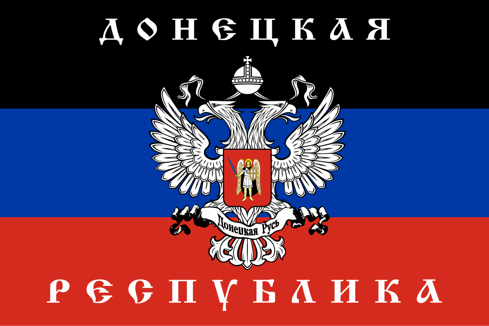

The Donetsk People's Republic (DPR) is a Russian backed self-declared state located in the Donetsk Oblast of Eastern Ukraine. After the Euromaidan revolution in Kyiv, Russia invaded and annexed Crimea, which was followed soon by armed ethnic Russian militants stormed and came to control the city of Donetsk and Luhansk. These "little green men" proclaimed the independence of the DPR and the Luhansk People's Republic, igniting a civil conflict and insurgency in the Donbass region. During the war in Donbass, DPR militants were backed directly and "secretly" by Putin's Russia, who sent armored vehicles, artillery support, and guns. During the war in Donbass, separatists would indiscriminately shell towns and cities controlled by Ukraine, killing dozens of civilians. Fighters of the DPR followed forms of Russian nationalism, attracting Russian foreign fighters of all types, including neo-nazi and communist formations. DPR governance following the Minsk II was marked by increased authoritarianism, suppressed dissent, and the glorification of the Tsarist and Soviet periods. During the 2022 Russian Invasion of Ukraine, DPR soldiers would continue to make up a significant amount of the fighting in the Donbass. Both the DPR and the LPR would be annexed by the Russian Federation in September of 2022.
The fighters and leadership of the DPR follow Russian nationalism, with some fighters following more extreme forms of it. In DPR propaganda and press releases, post-Maidan Ukraine is characterized as "fascist" and "banderite", the declared anathema of Russia. The DPR and the LPR were also interested in implementing the Novorossiya project in the rest of Russian speaking Ukraine, a Putin-backed initiative to create a confederation between Russian speakers in the Eastern Ukraine. Russian ideologues and propagandists view Novorossiya, the DPR, and the LPR, as a necessary component of building the Russkiy Mir/Greater Russia and standing toe to toe with the West. The DPR and the LPR are a mix of both right wing and left wing Russian nationalism. To the left in Russian nationalism, the Russian separatist states nationalize mines, erect Lenin statues, adopt stalinist constitutions, and wave Soviet flags. To the right, the separatist states attract Russian fascist and neo-nazi formations (such as the Russian Imperial Movement, DShRG Rusich), use tsarist, cossack, christian symbols, and deploy a commander who had previously reenacted as a soldier in tsarist Russia. During the start of the war in Donbass, the DPR and LPR would use insurgency tactics, gaining territory and experience before they launched larger offensives with newly acquired Russian arms. Governing their statelets, the DPR and the LPR would use tough tactics like torture, surveillance, and capital punishment to eradicate opposition. The Russian separatist projects ran prisons and camps extrajudicially torturing and tormenting people.
• https://www.cam.ac.uk/stories/donbaspropaganda
• https://www.aljazeera.com/news/2022/2/22/what-are-donetsk-and-luhansk-ukraines-separatist-statelets
• https://hir.harvard.edu/donetsks-isolation-torture-prison/